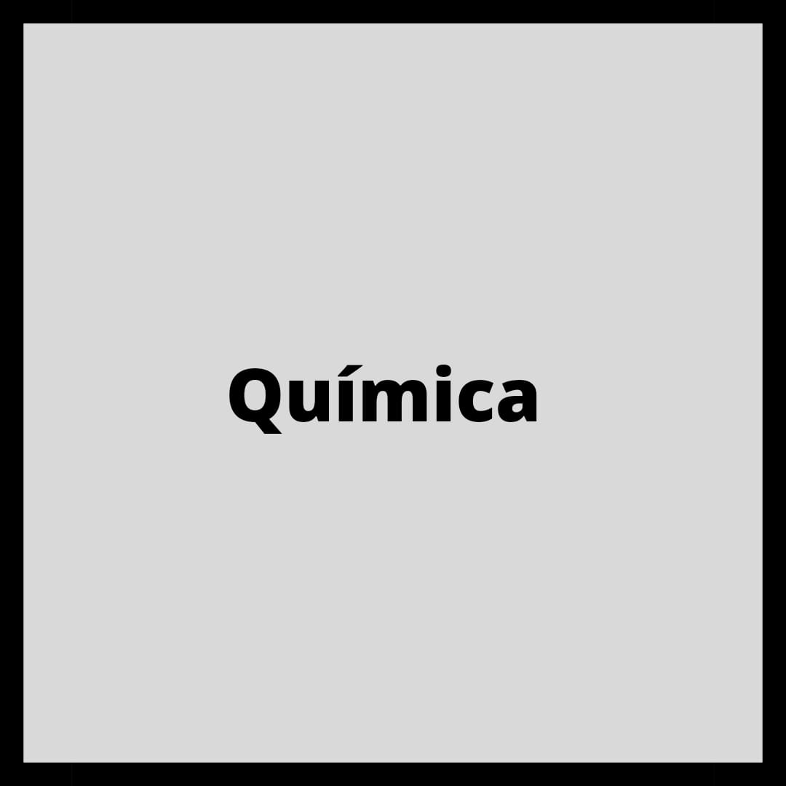

O Curso Técnico Integrado em Química forma profissionais que atuam
no planejamento, coordenação, operação e controle dos processos
industriais e equipamentos nos processos produtivos; planejam e
coordenam os processos laboratoriais; realizam amostragens, análises
químicas, físico-químicas e microbiológicas; realizam vendas e
assistência técnica na aplicação de equipamentos e produtos químicos; participam no desenvolvimento de produtos e validação de métodos; atuam com
responsabilidade ambiental e em conformidade com as normas
técnicas, as normas de qualidade e de boas práticas de manufatura e
de segurança. Possibilidades de atuação: Indústrias; Empresas de
comercialização e assistência técnica; Laboratórios de ensino, de calibração, de análise e controle de qualidade e
ambiental; Entidades de certificação de produtos; Tratamento de águas e de efluentes.
Plano de Curso:
Química